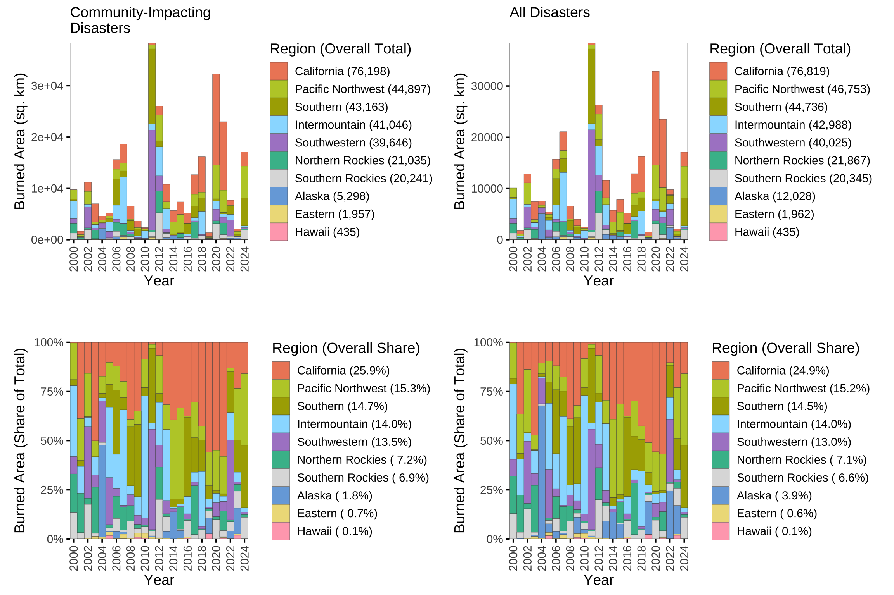
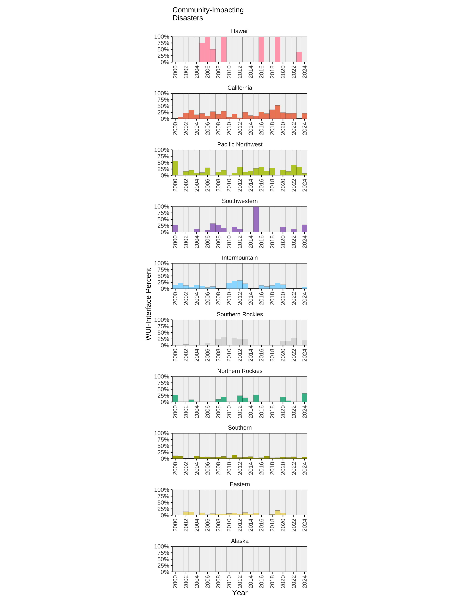

| Nationwide | Alaska | California | Eastern | Hawaii | Intermountain | Northern Rockies | Pacific Northwest | Southern | Southern Rockies | Southwestern | |
|---|---|---|---|---|---|---|---|---|---|---|---|
| All Fires | |||||||||||
| Count | 6392 (100.0000%) | 78 ( 1.2203%) | 862 ( 13.4856%) | 672 ( 10.5131%) | 19 ( 0.2972%) | 384 ( 6.0075%) | 248 ( 3.8798%) | 365 ( 5.7103%) | 3202 ( 50.0939%) | 306 ( 4.7872%) | 256 ( 4.0050%) |
| WUI Interface Fires | 664 ( 10.3880%) | 0 ( 0.0000%) | 179 ( 2.8004%) | 41 ( 0.6414%) | 11 ( 0.1721%) | 51 ( 0.7979%) | 22 ( 0.3442%) | 66 ( 1.0325%) | 221 ( 3.4574%) | 42 ( 0.6571%) | 31 ( 0.4850%) |
| WUI Intermix Fires | 3894 ( 60.9199%) | 1 ( 0.0156%) | 605 ( 9.4650%) | 368 ( 5.7572%) | 15 ( 0.2347%) | 177 ( 2.7691%) | 99 ( 1.5488%) | 229 ( 3.5826%) | 2084 ( 32.6033%) | 170 ( 2.6596%) | 146 ( 2.2841%) |
| WUI Any Fires | 589 ( 9.2146%) | 0 ( 0.0000%) | 170 ( 2.6596%) | 21 ( 0.3285%) | 11 ( 0.1721%) | 50 ( 0.7822%) | 21 ( 0.3285%) | 65 ( 1.0169%) | 180 ( 2.8160%) | 40 ( 0.6258%) | 31 ( 0.4850%) |
| Missing WUI | 0 ( 0.0000%) | 0 ( 0.0000%) | 0 ( 0.0000%) | 0 ( 0.0000%) | 0 ( 0.0000%) | 0 ( 0.0000%) | 0 ( 0.0000%) | 0 ( 0.0000%) | 0 ( 0.0000%) | 0 ( 0.0000%) | 0 ( 0.0000%) |
| Missing Ignition Date | 0 ( 0.0000%) | 0 ( 0.0000%) | 0 ( 0.0000%) | 0 ( 0.0000%) | 0 ( 0.0000%) | 0 ( 0.0000%) | 0 ( 0.0000%) | 0 ( 0.0000%) | 0 ( 0.0000%) | 0 ( 0.0000%) | 0 ( 0.0000%) |
| Missing Containment Date | 5408 ( 84.6058%) | 68 ( 1.0638%) | 471 ( 7.3686%) | 670 ( 10.4819%) | 8 ( 0.1252%) | 293 ( 4.5839%) | 203 ( 3.1758%) | 217 ( 3.3949%) | 3069 ( 48.0131%) | 227 ( 3.5513%) | 182 ( 2.8473%) |
| Missing Civilian Fatalities | 6179 ( 96.6677%) | 75 ( 1.1733%) | 721 ( 11.2797%) | 653 ( 10.2159%) | 18 ( 0.2816%) | 379 ( 5.9293%) | 248 ( 3.8798%) | 354 ( 5.5382%) | 3174 ( 49.6558%) | 302 ( 4.7247%) | 255 ( 3.9894%) |
| Missing Evacuations | 6054 ( 94.7121%) | 70 ( 1.0951%) | 736 ( 11.5144%) | 662 ( 10.3567%) | 18 ( 0.2816%) | 348 ( 5.4443%) | 234 ( 3.6608%) | 306 ( 4.7872%) | 3156 ( 49.3742%) | 280 ( 4.3805%) | 244 ( 3.8173%) |
| Missing Structures Destroyed | 439 ( 6.8680%) | 5 ( 0.0782%) | 22 ( 0.3442%) | 28 ( 0.4380%) | 8 ( 0.1252%) | 49 ( 0.7666%) | 27 ( 0.4224%) | 86 ( 1.3454%) | 112 ( 1.7522%) | 49 ( 0.7666%) | 53 ( 0.8292%) |
| Fatalities per 100K | 4.76 | 0.14 | 0.53 | 0.03 | 6.73 | 0.21 | 0.18 | 0.07 | 0.05 | 0.11 | 0.00 |
| Burned Area Percent | Inf | 0.70 | 18.89 | 0.11 | 2.60 | 5.93 | 3.39 | 11.03 | 2.03 | 1.93 | 6.56 |
| Community-Impacting Fires | |||||||||||
| Count | 6238 (100.0000%) | 36 ( 0.5771%) | 855 ( 13.7063%) | 665 ( 10.6605%) | 18 ( 0.2886%) | 351 ( 5.6268%) | 229 ( 3.6710%) | 354 ( 5.6749%) | 3188 ( 51.1061%) | 302 ( 4.8413%) | 240 ( 3.8474%) |
| WUI Interface Fires | 664 ( 10.6444%) | 0 ( 0.0000%) | 179 ( 2.8695%) | 41 ( 0.6573%) | 11 ( 0.1763%) | 51 ( 0.8176%) | 22 ( 0.3527%) | 66 ( 1.0580%) | 221 ( 3.5428%) | 42 ( 0.6733%) | 31 ( 0.4970%) |
| WUI Intermix Fires | 3894 ( 62.4239%) | 1 ( 0.0160%) | 605 ( 9.6986%) | 368 ( 5.8993%) | 15 ( 0.2405%) | 177 ( 2.8374%) | 99 ( 1.5870%) | 229 ( 3.6710%) | 2084 ( 33.4081%) | 170 ( 2.7252%) | 146 ( 2.3405%) |
| WUI Any Fires | 589 ( 9.4421%) | 0 ( 0.0000%) | 170 ( 2.7252%) | 21 ( 0.3366%) | 11 ( 0.1763%) | 50 ( 0.8015%) | 21 ( 0.3366%) | 65 ( 1.0420%) | 180 ( 2.8855%) | 40 ( 0.6412%) | 31 ( 0.4970%) |
| Missing WUI | 0 ( 0.0000%) | 0 ( 0.0000%) | 0 ( 0.0000%) | 0 ( 0.0000%) | 0 ( 0.0000%) | 0 ( 0.0000%) | 0 ( 0.0000%) | 0 ( 0.0000%) | 0 ( 0.0000%) | 0 ( 0.0000%) | 0 ( 0.0000%) |
| Missing Ignition Date | 0 ( 0.0000%) | 0 ( 0.0000%) | 0 ( 0.0000%) | 0 ( 0.0000%) | 0 ( 0.0000%) | 0 ( 0.0000%) | 0 ( 0.0000%) | 0 ( 0.0000%) | 0 ( 0.0000%) | 0 ( 0.0000%) | 0 ( 0.0000%) |
| Missing Containment Date | 5261 ( 84.3379%) | 27 ( 0.4328%) | 467 ( 7.4864%) | 663 ( 10.6284%) | 7 ( 0.1122%) | 260 ( 4.1680%) | 185 ( 2.9657%) | 207 ( 3.3184%) | 3055 ( 48.9740%) | 223 ( 3.5749%) | 167 ( 2.6771%) |
| Missing Civilian Fatalities | 6030 ( 96.6656%) | 35 ( 0.5611%) | 716 ( 11.4780%) | 646 ( 10.3559%) | 17 ( 0.2725%) | 347 ( 5.5627%) | 229 ( 3.6710%) | 343 ( 5.4986%) | 3160 ( 50.6573%) | 298 ( 4.7772%) | 239 ( 3.8314%) |
| Missing Evacuations | 5905 ( 94.6618%) | 30 ( 0.4809%) | 730 ( 11.7025%) | 656 ( 10.5162%) | 17 ( 0.2725%) | 316 ( 5.0657%) | 215 ( 3.4466%) | 295 ( 4.7291%) | 3142 ( 50.3687%) | 276 ( 4.4245%) | 228 ( 3.6550%) |
| Missing Structures Destroyed | 434 ( 6.9574%) | 3 ( 0.0481%) | 22 ( 0.3527%) | 28 ( 0.4489%) | 8 ( 0.1282%) | 49 ( 0.7855%) | 25 ( 0.4008%) | 85 ( 1.3626%) | 112 ( 1.7954%) | 49 ( 0.7855%) | 53 ( 0.8496%) |
| Fatalities per 100K | 4.72 | 0.00 | 0.53 | 0.03 | 6.73 | 0.19 | 0.13 | 0.07 | 0.05 | 0.11 | 0.00 |
| Burned Area Percent | Inf | 0.31 | 18.74 | 0.11 | 2.60 | 5.66 | 3.26 | 10.59 | 1.95 | 1.92 | 6.50 |
WFBZ Summaries
Summary Statistics
Variables over Time
Number of Fire Disasters per Region over Time

Number of Fatalities per Region over Time
The five deadliest fires in our data set are labeled.

Number of Structures Destroyed per Region over Time
The five fires in our data set with the most destroyed structures are labeled.

Number of FEMA Declarations per Region over Time
Burned Area over Time

Number of Fires in Wildland-Urban Interface over Time

Number of Fires in Wildland-Urban Intermix over Time

Share of WUI Fires over Time
Share of Fires in Wildland-Urban Intermix over Time

Correlations
Numeric Values Compared

Numeric & Categorical Values Compared

Categorical Values Compared
Fire Season Timing

Reference
Regions Mapped

To Do
Not Done:
- Why is 2024 missing for fatalities?
- DURATION
- Forest plot or similar chart Y axis is calendar months, x axis is year, faceted by region or state. Showing first and last states or actually density plot?
- Spaghetti plot by state with percentage of residents affected by fires (Lauren to provide)
- WUI Figures:
- Map of distance from wuis for whole US (Binned)
- plots showing how many fires fall in each bin over time
- Add USFS region to data set (Separate out Hawaii from California. Rename Northern -> Northern Rockies) done in plots, not in data set
Done:
- Correlation plot of each of these variables (by region???) for ONLY community affected area
- Add acreage, WUI, as plots
- Show plots WITH non-community intersecting fires DONE
- Label major fires in fatalities plot, structures plot DONE
- Put community intersect side by side with overall
- Align axis ticks with years better
- Add share of total events that affect WUI